Designing Voice Agents for Real Conversations
Directly informs which turn-detection architecture to pick for a voice agent build (Silero VAD vs
If you only read one thing
- Humans switch turns in about 200ms; the best measured cascaded voice pipeline (Salesforce, March 2026) hit 755ms, so turn-taking design has to compensate for a 4x gap.
- Three levels of turn detection exist: Silero VAD alone (fully self-owned but context-blind), STT-provider built-in endpointing (smarter but opaque), and local VAD + Smart Turn model (full control, 58.9% recall with VAD as a safety net).
- STT and LLM time-to-first-token together eat about two-thirds of the voice latency budget, making them the only two real levers to reduce total response time.
The three levels are not mutually exclusive escalation steps but three different ways to answer the same silence, with level three combining local VAD as a fallback under a Smart Turn model to get ownership without getting stuck (ours).

Why turn-taking is an audio problem, not an LLM problem
- The speakers demonstrate that the identical LLM, prompt, and model can produce a broken or a smooth conversation purely based on how fast the pipeline detects that a user has stopped or started talking.
- Humans switch turns within about 200ms; at 800ms things start to feel off, and at 1.5 seconds users hang up.
“200 milliseconds is how fast humans switch turns with each other in a conversation”
said at 02:37“at 1.5 seconds, your user just hang up on you”
said at 02:37


Where the latency budget actually goes
- A pipeline breakdown from Pipecat's creator shows roughly 1,100-1,300ms total in a standard cloud-API setup: ~40ms audio in, ~52ms network/jitter, ~300ms STT/endpointing, 500-650ms LLM time-to-first-byte, and ~85-120ms TTS playback.
- Co-locating models on the same GPU cluster can bring this down to about 500ms, but most developers calling APIs land at 800-1,300ms.
“best measured response time was 755 milliseconds. So, that's like almost 4x slower than how humans naturally take turns”
said at 03:08“the STT, LLM, together eat about 2/3 of the is latency budget”
said at 16:45


Three levels of turn detection
- Level one is Silero VAD alone, a 300K-parameter, 2MB model that only detects silence and cannot distinguish a completed thought from a breath pause or backchannel.
- Level two hands turn detection to the STT provider (Cartesia, Deepgram), which uses more signal but is opaque when it misfires.
- Level three runs local VAD plus a Smart Turn model during silence, giving full ownership and portability with a VAD timer as fallback when the model isn't confident.
“the same silence can have a different intent. And it can be like completely different things. It could be like a completed sentence, it would be an incomplete thought”
said at 07:49“you keeps a little VAD running locally for basic signal that is there a speech. And you add Smart Turn on top of it, which is a small model that runs during silence”
said at 10:15“it has about 58.9% recall and 68.4 percent precision”
said at 10:15Which LLMs are fast enough for voice
- Benchmarking in June 2026 against a target of under 700ms time-to-first-token, Nemotron-3 Ultra measured 529ms P50 and GPT-4.1 measured 536ms P50, but P95 tail latency matters more in conversation: GPT-4.1 spiked to 1.7s and Claude 3 exceeded 4 seconds at P95, which breaks a live conversational flow even when the median looks fine.
“GPT-4.1 was great at P50, but it spikes to 1.7 at P95. And it was even worse for Claude 3 that it hit over 4 seconds”
said at 18:58Commentary (ours)
The framing that STT+LLM eat two-thirds of the latency budget (ours) suggests teams optimizing voice UX should treat turn-detection sophistication as a cheaper lever than swapping LLM providers, since the model choice mostly moves the needle on the tail (P95) rather than the median.


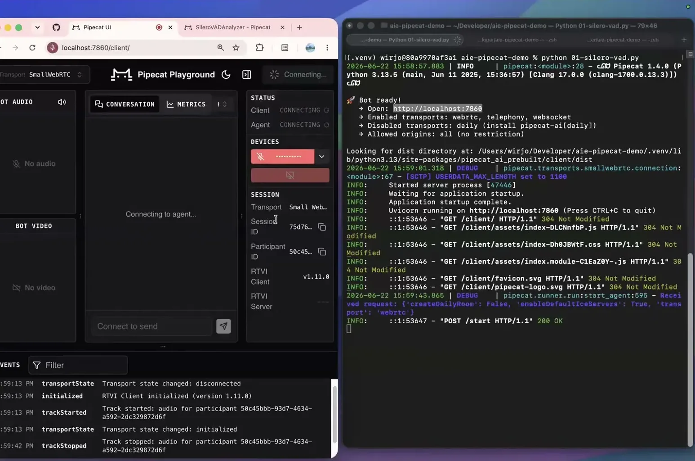
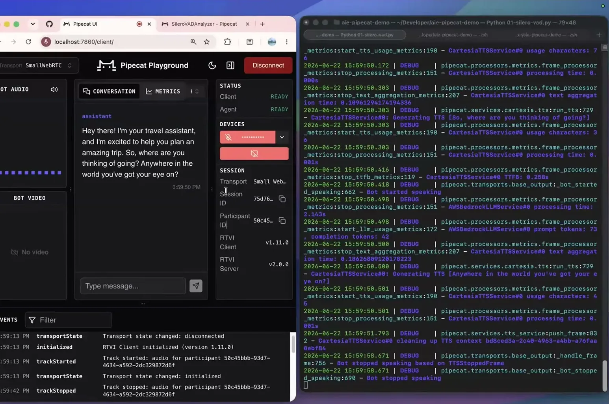
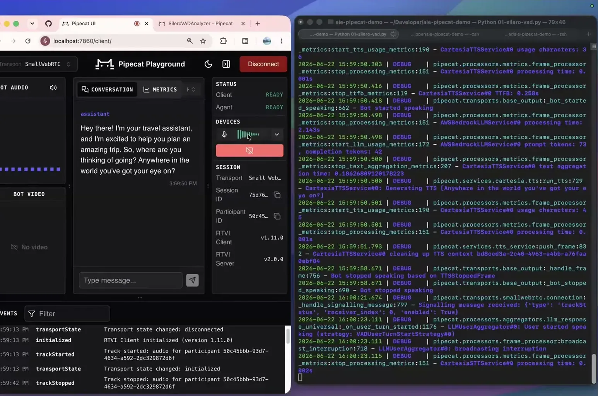
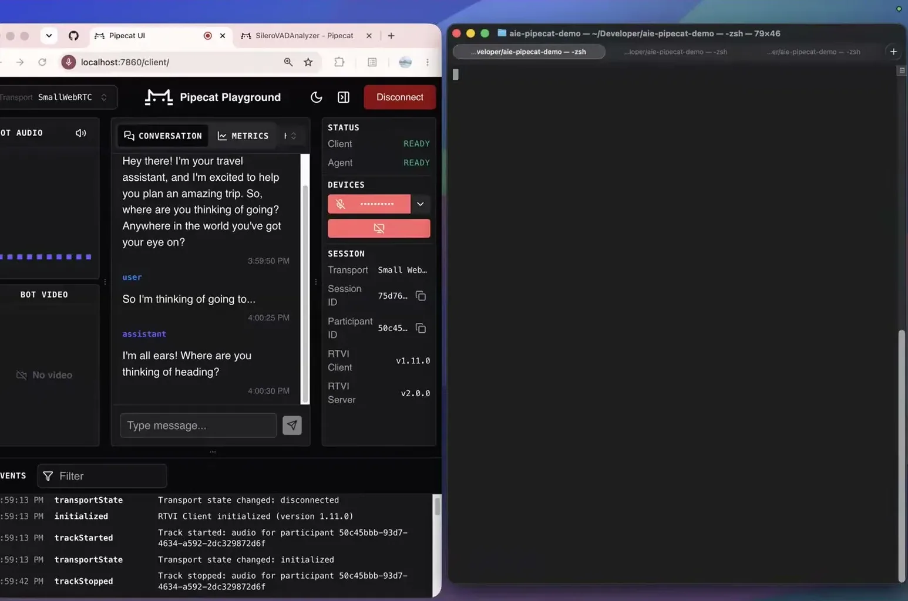
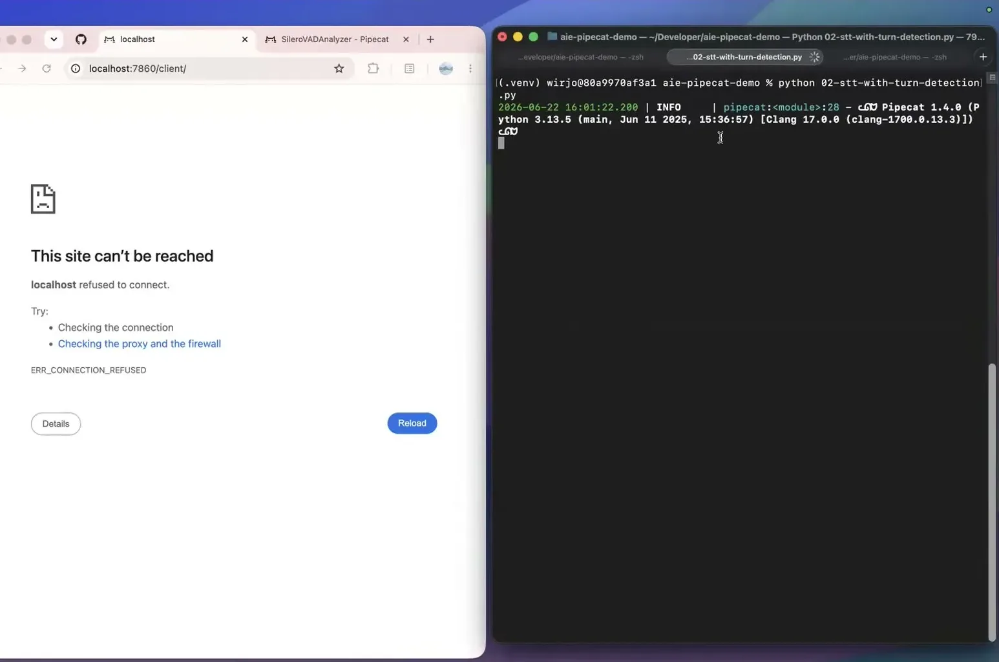
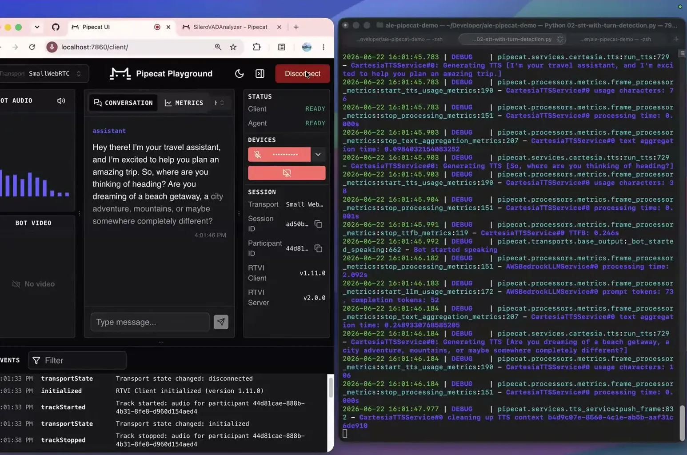
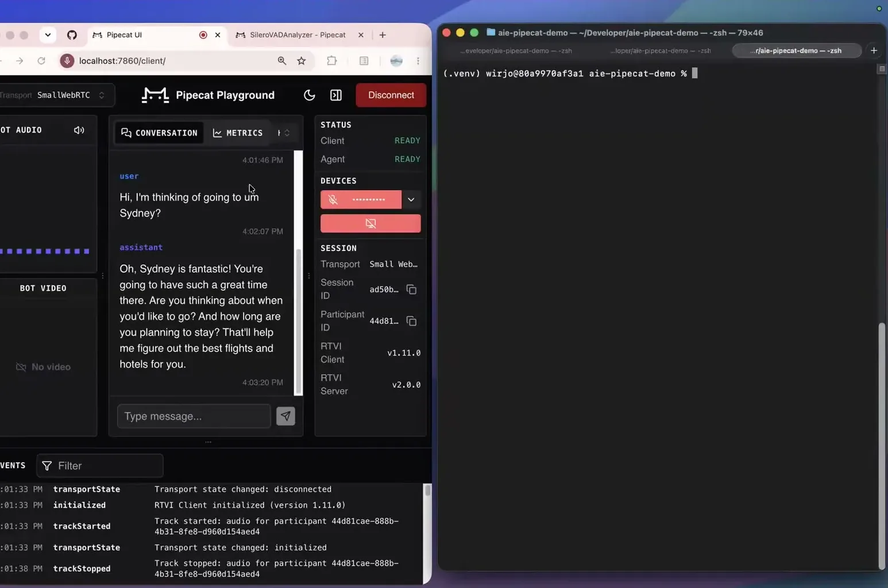
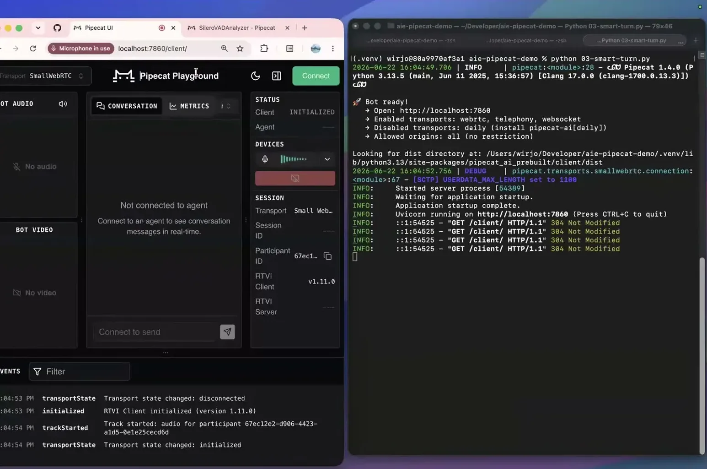
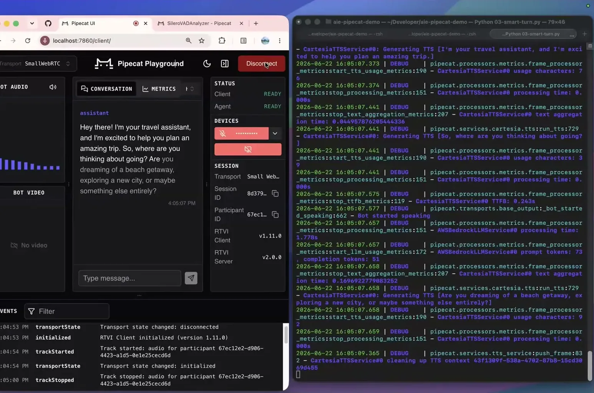
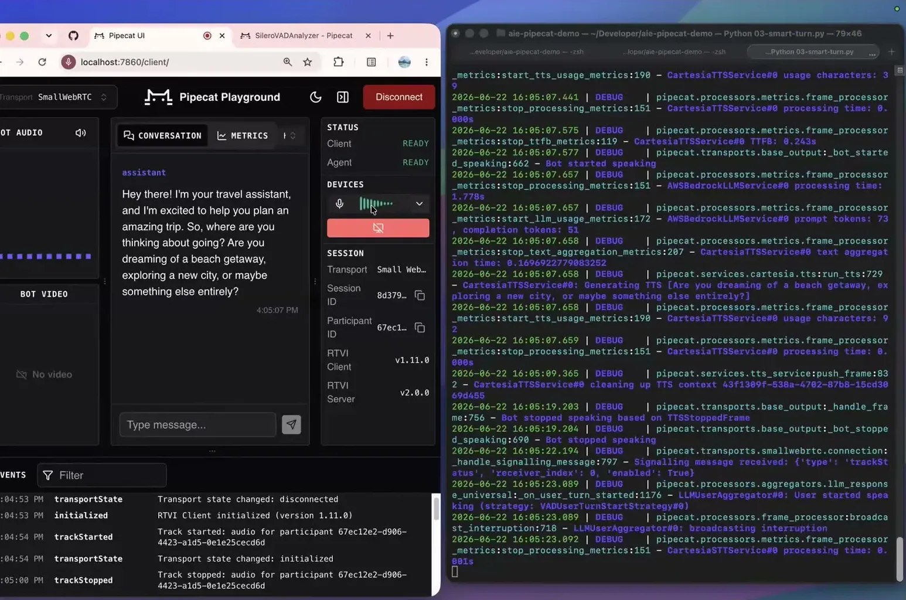
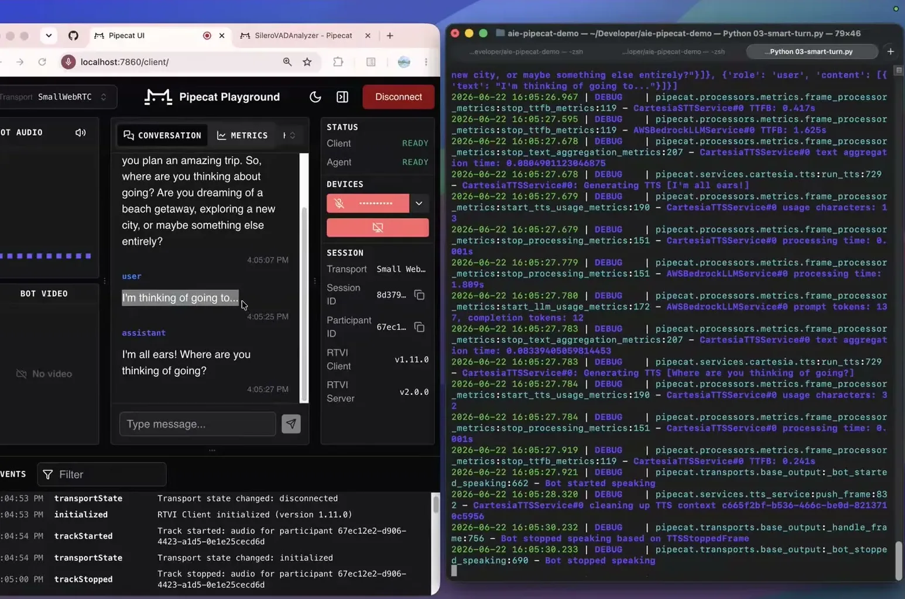
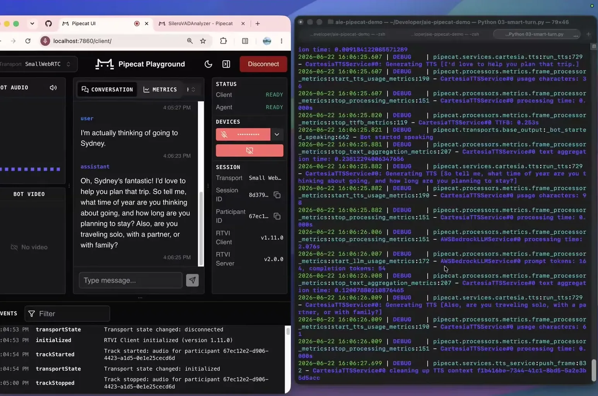

Underlying detail — every claim, typed and timestamped (8)
| Stance | Claim | t |
|---|---|---|
| asserts | Humans switch conversational turns roughly every 200 milliseconds. | 02:37 |
| warns | Response delay past about 1.5 seconds causes users to abandon a voice interaction. | 02:37 |
| asserts | The best published cascaded voice pipeline response time as of the talk was 755ms, about 4x slower than human turn-taking. | 03:08 |
| asserts | STT and LLM time-to-first-byte together account for roughly two-thirds of total voice pipeline latency. | 16:45 |
| warns | Silero VAD cannot distinguish whether a silence is a completed thought, a breath pause, an interruption, or a backchannel acknowledgement. | 07:49 |
| recommends | Recommends running local VAD alongside a Smart Turn model during silence, with the VAD timer as a fallback safety net when the model isn't confident. | 10:15 |
| asserts | Smart Turn's turn-detection model achieves about 58.9% recall and 68.4% precision, with a BSD-2 license and 8MB size. | 10:15 |
| warns | GPT-4.1 and Claude 3 have strong median time-to-first-token but spike badly at P95, which breaks conversational flow. | 18:58 |
Machine-readable copy embedded in this page (script#ontology) and in the corpus ontology.